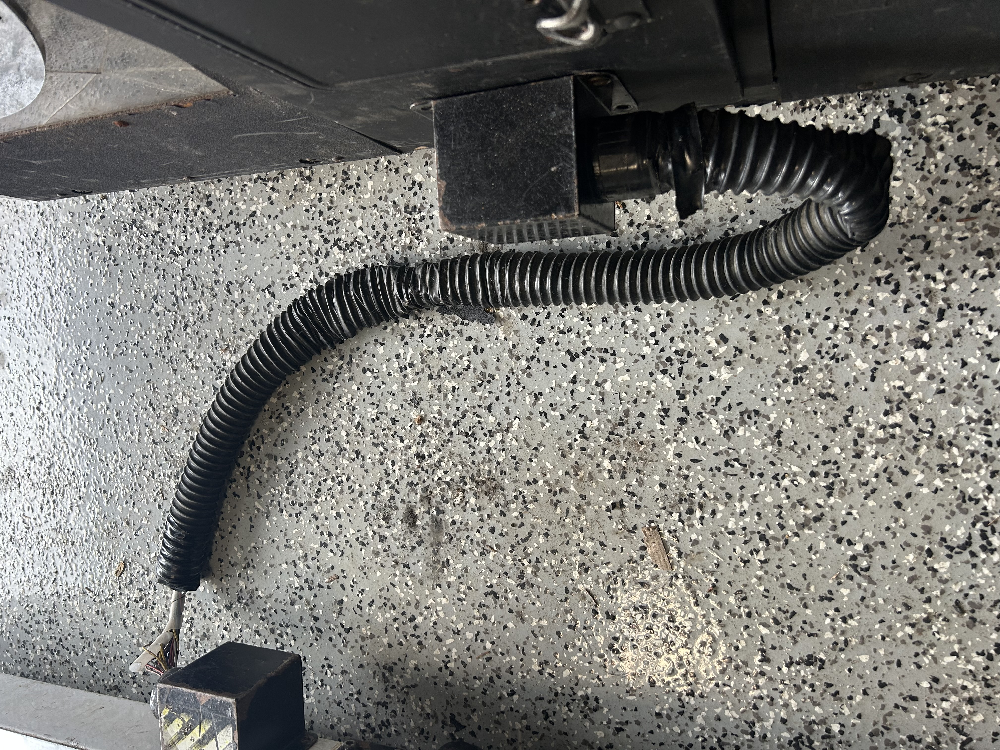
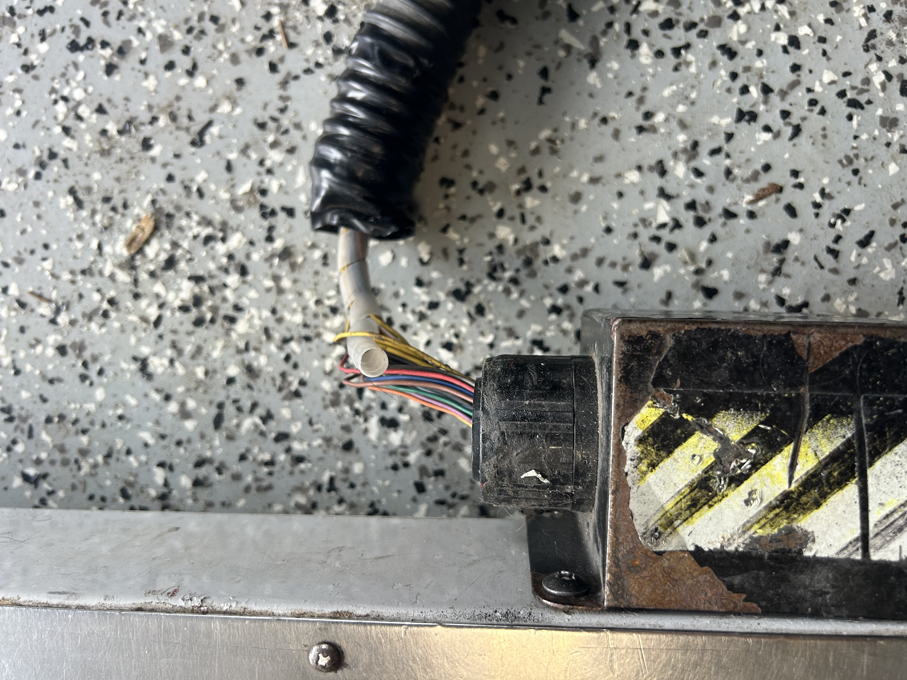
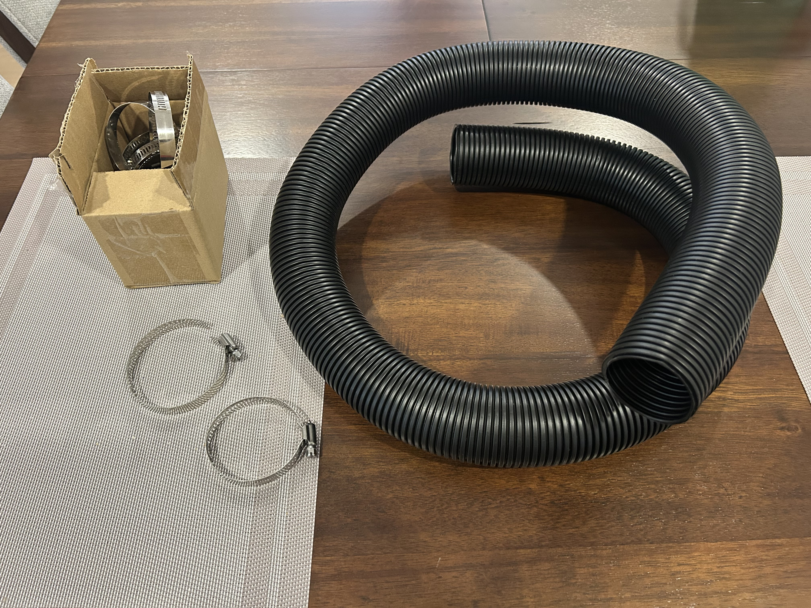
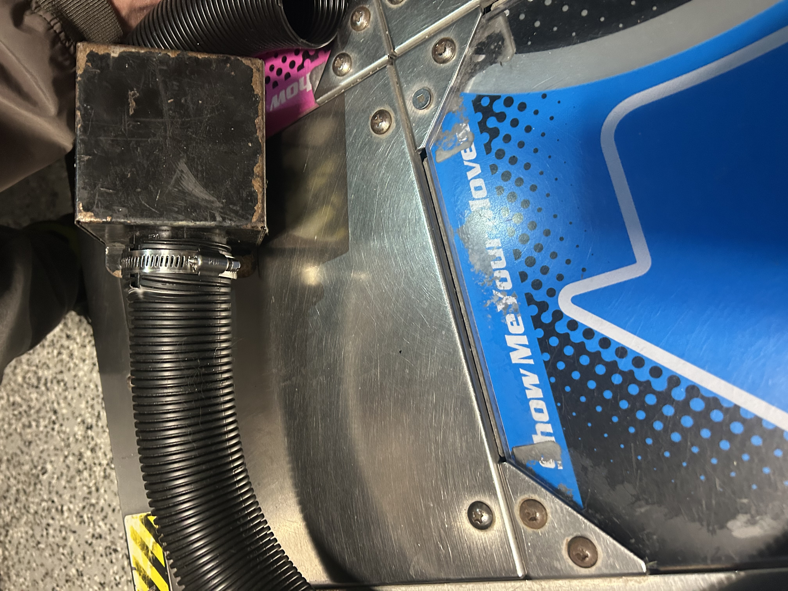
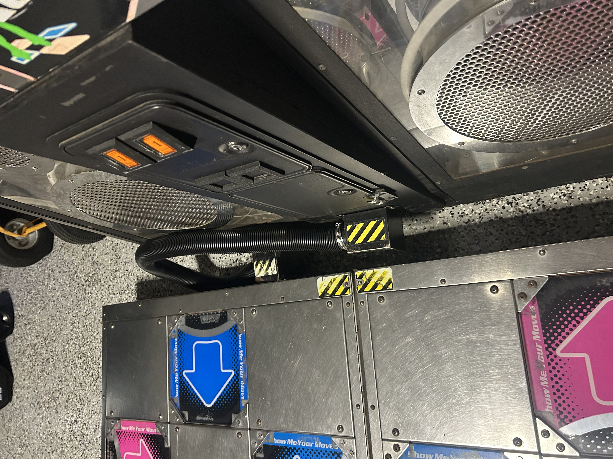

Vol 6: Tube Modification
What I bought
The wire conduit connecting the dance pad controllers to the cabinet was already pretty chewed up when the machine arrived. At the time, I figured it was mostly cosmetic and didn’t pose much of a risk.
That was before winter.

With winter approaching, we’ll be parking our car in the garage again. I didn’t have the machine last winter, so this got me thinking about the exposed wiring. Snow, slush, and whatever else gets tracked in on the tires can quickly melt into a mess. The last thing I want is for moisture to find its way into the wiring and cause problems.
Time for a little preventative maintenance.

Ordering parts
I noticed that ddrpad.com had both a replacement tube (complete with connector boxes) and a wire harness in stock. Unfortunately, the whole thing would have cost me around $300 CAD, before import fees. I was convinced this could be a DIY job.
I spent an unholy amount of time trying to figure out what to search for. “Black tube hose” wasn’t getting me very far, but after plenty of trial and error, I eventually landed on a few useful terms:
- Dryer hose
- Tube sleeve protector
- Wire harness protector
- Wire conduit
Conduit turned out to be the right term for what I needed. I’m sure there are other names and alternatives that would work just as well, but this got me in the right direction.
A friend I spoke to over dinner also suggested hose clamps, which seemed like the simplest way to secure the new tubing to the connector boxes.

Wiring it up
The installation itself wasn’t particularly difficult, especially with a few tools and the help of my neighbor.
We started by unscrewing the connector boxes from both the dance pad and the cabinet. Next came the Molex connectors, which are a bit of a pain to remove. The trick here is to be careful not to snap anything or accidentally pull a wire loose.
Once everything was disconnected, we used a box cutter to carefully remove the old conduit. I took a little time to tidy up and re-bundle the wires before feeding them through the new tubing.
From there, we clamped both ends, reattached the connector boxes, and screwed everything back into place.
I won’t go into a detailed step-by-step guide because, honestly, this is one of those jobs where the pictures pretty much tell the story.

Here is a look at the finished job

The new conduit gives the wiring a much better layer of protection against whatever winter throws at it. It also makes for a tighter, neater setup, leaving a little more room for my wife to park in the garage.
A relatively inexpensive fix, and one less thing to worry about.
Winter ready!